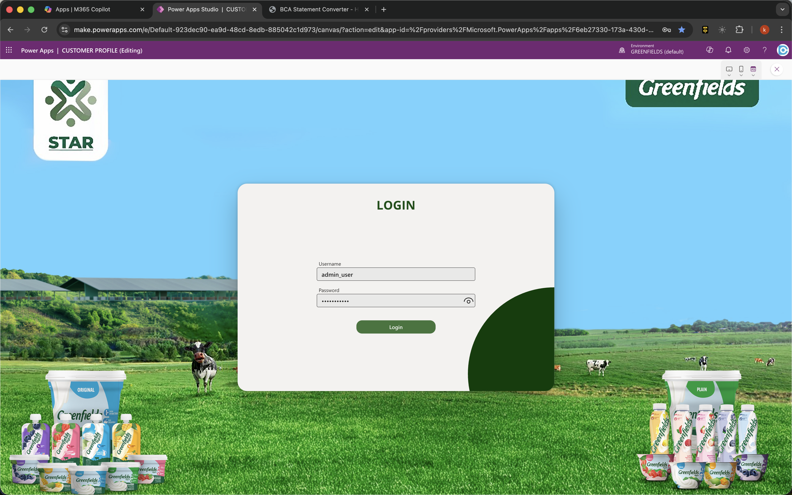
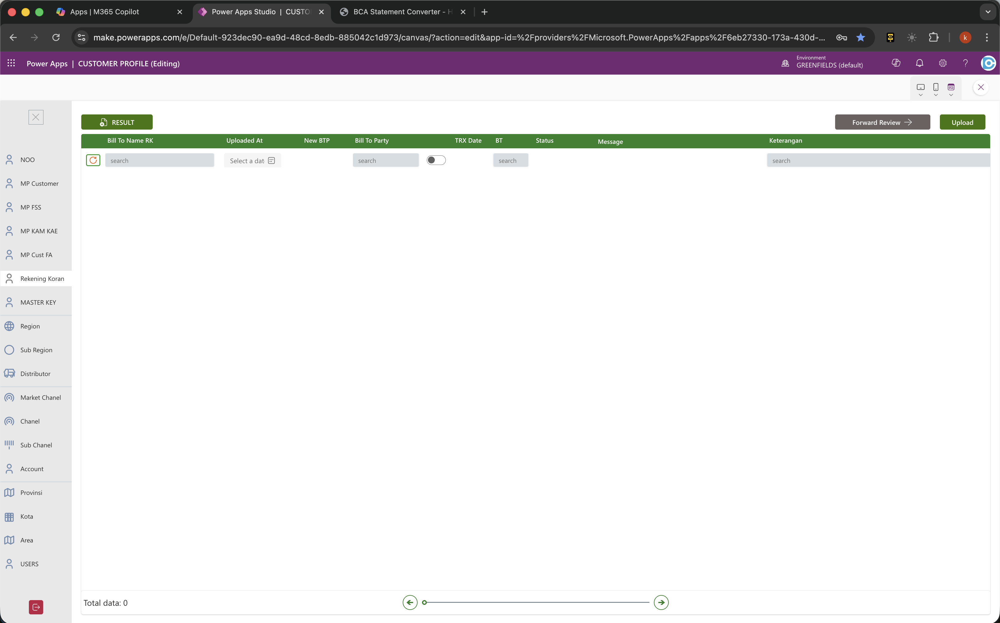
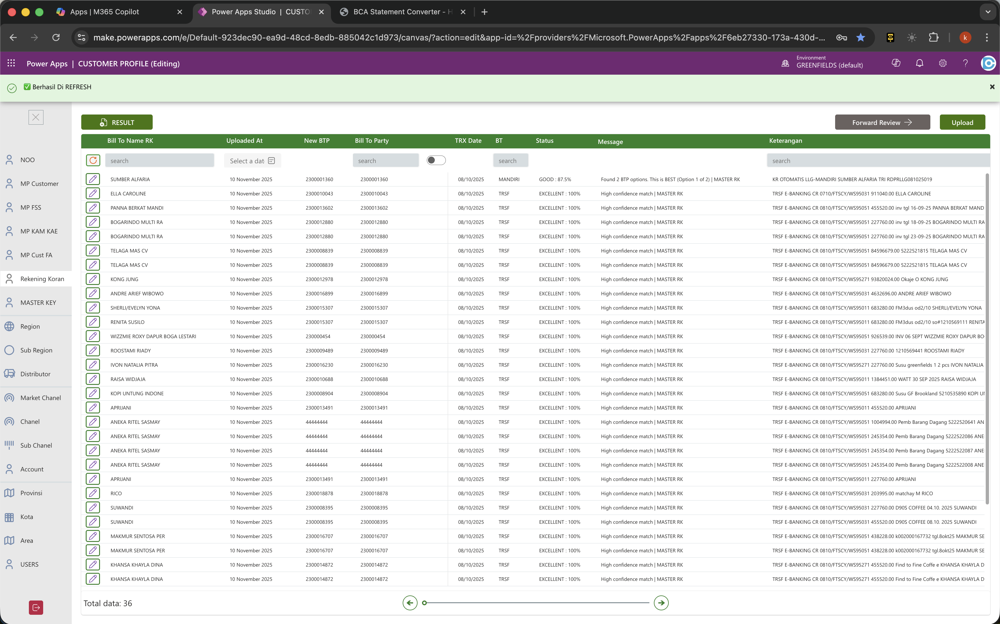
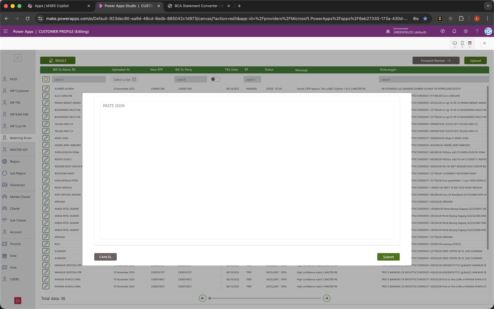
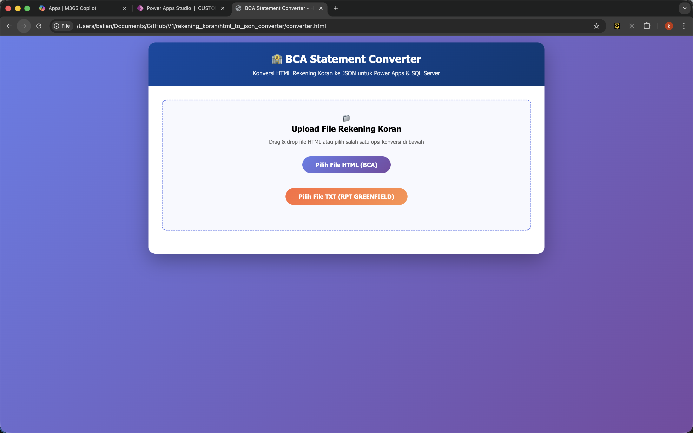
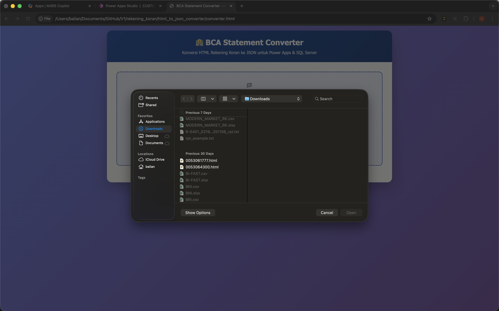
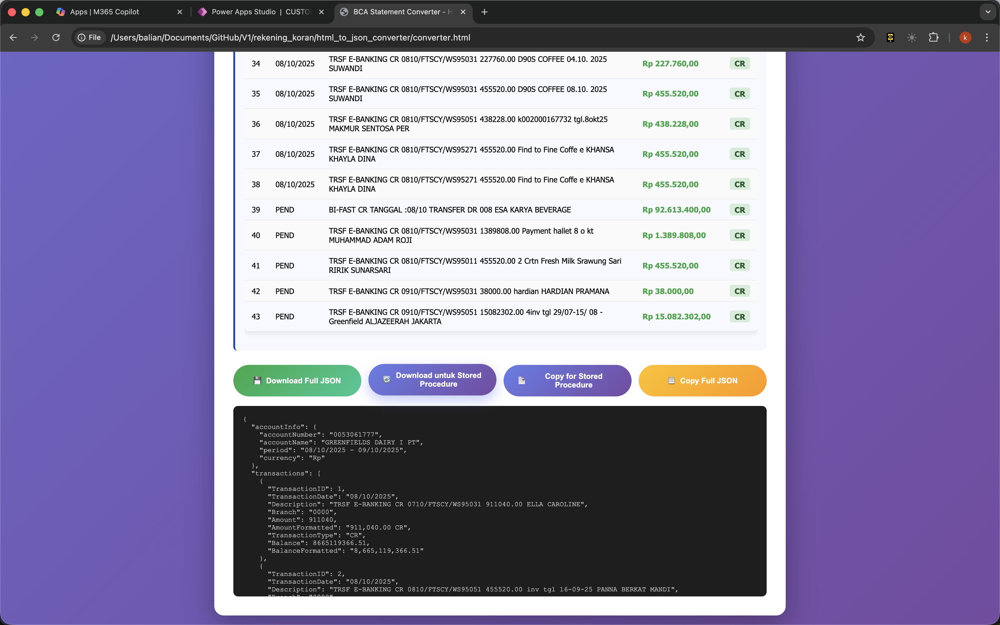
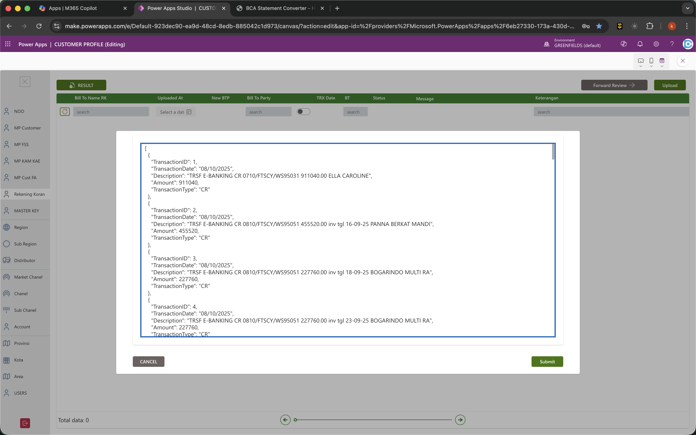
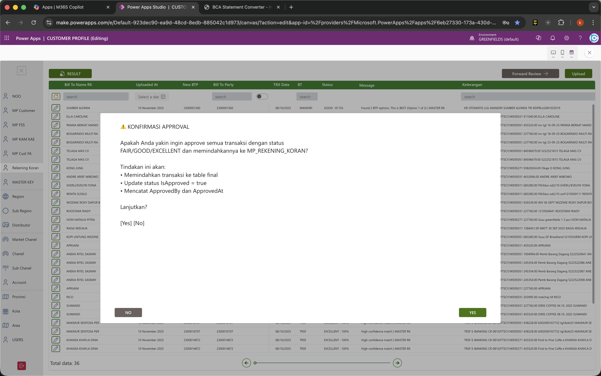
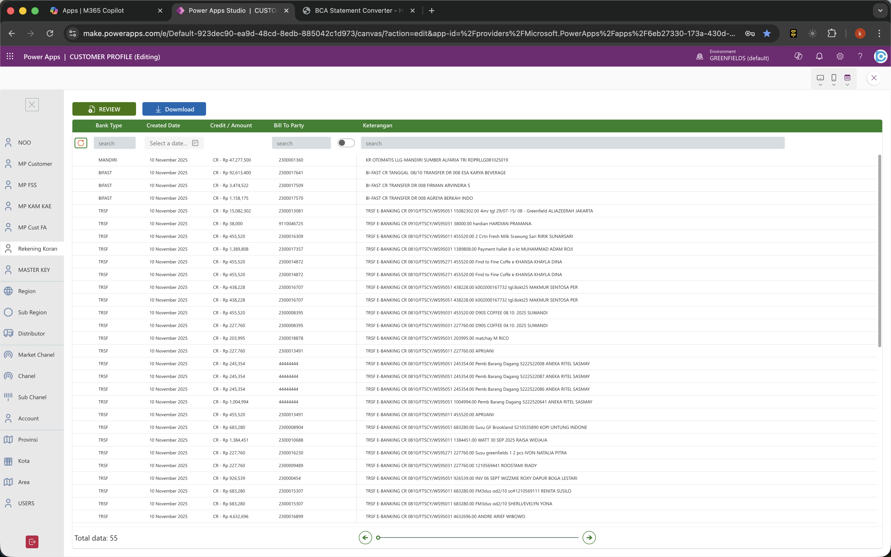

Masuk ke Power Apps
Buka aplikasi Power Apps dan lakukan login menggunakan akun perusahaan yang memiliki akses ke solusi Rekening Koran.

Membuka Modul Rekening Koran
Pada menu utama, pilih modul Rekening Koran untuk masuk ke halaman unggah mutasi.

Muat Data Awal
Ketuk tombol dengan ikon panah melingkar di pojok kanan atas. Ini memastikan daftar sudah memuat data terbaru sebelum kamu mulai.

Buka Popup Upload
Tekan tombol Upload di pojok kanan atas layar untuk memunculkan popup input JSON.

Buka Converter Rekening Koran
Klik tombol Open Converter untuk membuka alat BCA Statement Converter. Alat ini akan mengubah file rekening koran menjadi data yang bisa dipakai aplikasi.
Belum punya file konverternya? Unduh versi terbaru di sini: Download BCA Statement Converter

Pilih File Rekening Koran
Ambil file HTML atau TXT rekening koran yang akan diolah. Pastikan file yang dipilih adalah versi resmi dari bank.

Salin Data dari Converter
Setelah proses selesai, tekan tombol Copy JSON for Stored Procedure untuk menyalin data yang baru saja dihasilkan.

Paste Data & Kirim
Paste data yang tadi disalin ke kotak Paste JSON (tekan Ctrl + V di keyboard), lalu tekan Submit untuk mengirim ke sistem.

Munculkan Data yang Baru
Setelah unggahan selesai, tekan lagi tombol panah melingkar. Dengan begitu, batch yang baru masuk akan terlihat di daftar review.

Kirim ke Data Final
Sesudah pengecekan selesai, tekan tombol Forward Review → agar data yang sudah cocok pindah ke daftar terakhir.

Lihat Rekap Akhir
Periksa daftar akhir untuk memastikan nilai uang, jenis transaksi (CR/DB), dan jenis bank tampil dengan benar. Setelah itu proses sudah selesai.